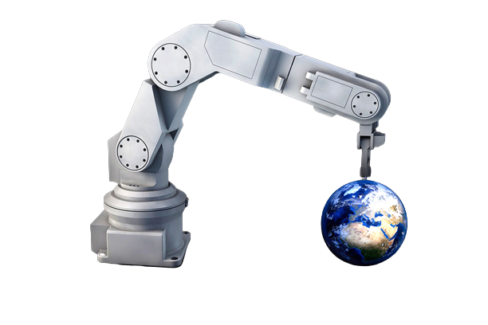

Prosseguimos com os estudos e iniciamos o aprendizado sobre automação industrial. Começamos com uma introdução aos principais componentes de um computador, compreendendo seu funcionamento básico. Em seguida, abordamos os conceitos fundamentais de sistemas embarcados, entendendo como esses sistemas são utilizados para controlar e monitorar dispositivos e processos industriais. No final do conteúdo, nos aprofundamos no estudo dos robôs industriais. Exploramos os diferentes tipos de robôs e suas aplicações na indústria.
Iniciamos com uma introdução sobre os componentes básicos de um computador, como a memória RAM, a memória interna e alguns sensores eletrônicos, como o sensor Ultrassônico. Também exploramos o código binário, sua conversão e tradução, e tivemos uma introdução à linguagem C, suas sintaxe e funcionalidades, aplicando esses conceitos em sistemas embarcados, como o Arduino.
Iniciamos com uma introdução sobre os componentes básicos de um computador, como a memória RAM, a memória interna e alguns sensores eletrônicos, como o sensor Ultrassônico. Também exploramos o código binário, sua conversão e tradução, e tivemos uma introdução à linguagem C, suas sintaxe e funcionalidades, aplicando esses conceitos em sistemas embarcados, como o Arduino.
Ao abordar os sistemas embarcados, aprendemos sobre portas lógicas, seu funcionamento, uso e diferentes tipos, como AND, OR, NOT, NAND e NOR, além de suas respectivas tabelas verdade. No contexto da automação, estudamos a robótica e sua história, conhecendo diferentes tipos de robôs, as linguagens de programação associadas a cada tipo e suas aplicações específicas. Foram apresentados exemplos de robôs móveis, como AGV e humanoides, robôs com estrutura cinemática, como os de eixos em série e em paralelo, e robôs geométricos, como os de coordenada cartesiana, cilíndrica e esférica. Exploramos também as diferentes partes de um robô industrial e os tipos de acionamento utilizados. Além disso, discutimos as diversas ferramentas que podem ser utilizadas pelos robôs, incluindo solda eletrolítica, garras, ferramentas de desbaste, câmeras, pistolas de tinta, ventosas, garras versáteis, entre outras.

Projetos desenvolvidos:
Tivemos a oportunidade de colocar em prática nossos conhecimentos ao desenvolver alguns projetos na plataforma tinkercad, incluindo a criação de um pequeno semáforo, leds sequenciais e um sensor ultrassônico.No primeiro projeto, fomos introduzidos ao Arduino, utilizando algumas de suas funções básicas. Ligamos lâmpadas de LED sequencialmente.